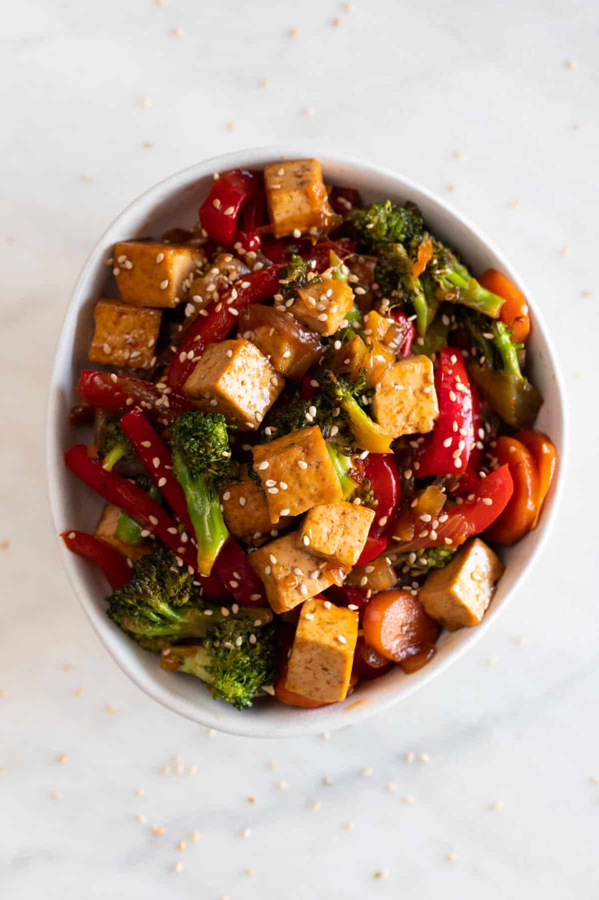

Tofu Stir Fry

Ingredients
- 180 ml vegetable stock or water
- 60 ml soy sauce
- 2 tablespoons brown sugar
- 2 tablespoons vegetable oil
- 400 g firm tofu, drained and cubed
- 1 small broccoli, chopped
- 2 red bell peppers, julienned
- 2 medium carrots, julienned
- 1 onion, julienned
- 2 cloves garlic, minced
- 1 tablespoon ginger root, minced
Instructions
- Mix all the sauce ingredients in a small container until well combined. Set aside.
- Add 1 tablespoon of oil to a wok, a frying pan, or a skillet and when is hot, add the tofu cubes and cook over medium-high heat until all the sides are golden brown. Set aside.
- Add the remaining tablespoon of oil and when it's hot, add the veggies and sautée over high heat for 2-3 minutes, stirring frequently.
- Add the tofu and the sauce to the pan, stir and cook for 1-2 more minutes or until the sauce thickens, stirring frequently.
- Try and add some salt if needed. Serve immediately over noodles or rice, or just by itself.